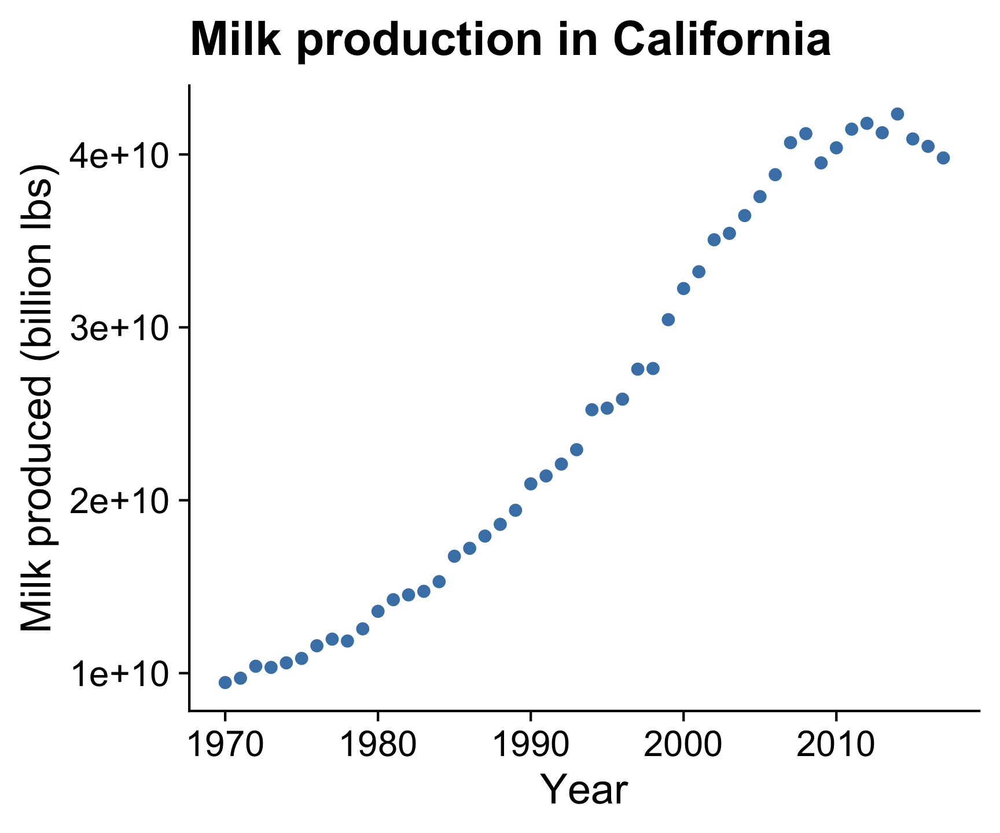
8 Plotting Trends
8.1 Single Variables
8.1.1 Points
Plotting the data points is a good starting point for viewing trends.
8.1.2 Points + line
Adding lines between the points helps see the overall trend.
How to: Points + line
Be sure to draw the line first, then overlay the points
ggplot(milk_ca,
aes(x = year, y = milk_produced)) +
geom_line(color = 'steelblue', size = 0.5) +
geom_point(color = 'steelblue', size = 2) +
theme_half_open(font_size = 18) +
labs(x = 'Year',
y = 'Milk produced (billion lbs)',
title = 'Milk production in California')8.1.3 Line
Omitting the points emphasizes the overall trend.
ggplot(milk_ca,
aes(x = year, y = milk_produced)) +
geom_line(color = 'steelblue', size = 1) +
theme_half_open(font_size = 18) +
labs(x = 'Year',
y = 'Milk produced (billion lbs)',
title = 'Milk production in California')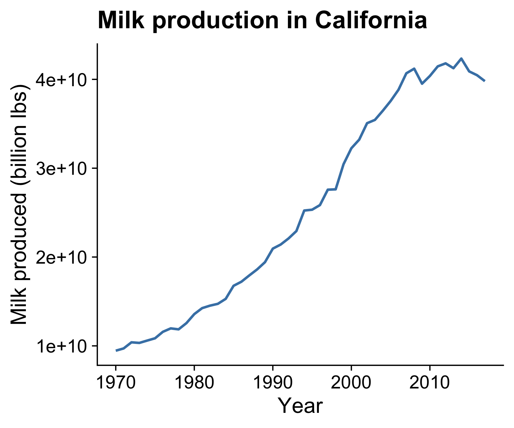
8.1.4 Line + area
Filling area below line emphasizes cumulative over time. (y-axis should start at 0)
If points are too sparse, a line can be misleading.
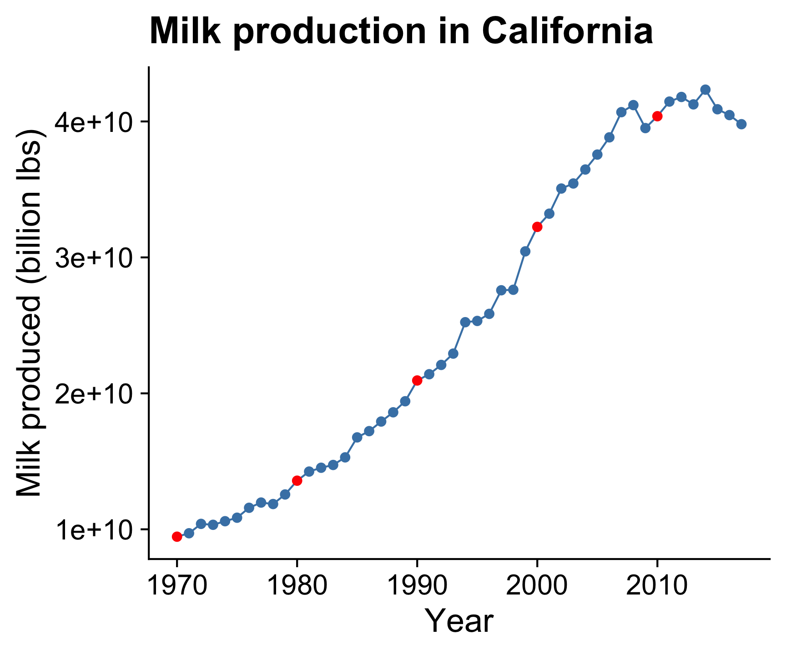
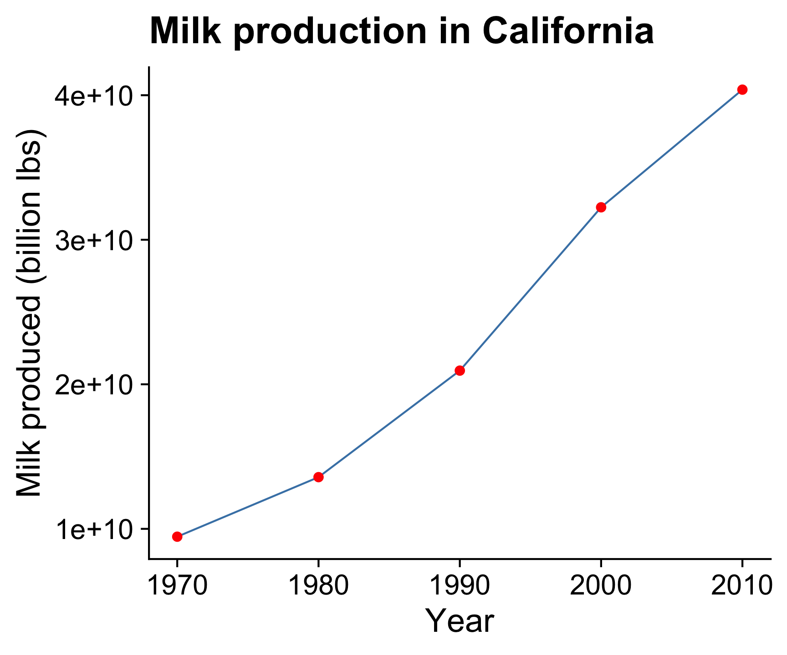
How to: Line + area
Likewise, draw the area first then overlay the line
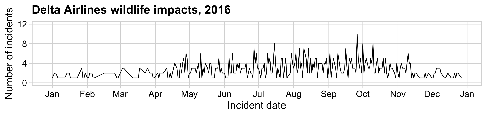
8.1.5 Smoothed line
Adding a “smoothed” line shows a modeled representation of the overall trend.
ggplot(milk_ca,
aes(x = year, y = milk_produced)) +
geom_smooth(color = 'steelblue', size = 1, se = FALSE) +
theme_half_open(font_size = 18) +
labs(x = 'Year',
y = 'Milk produced (billion lbs)',
title = 'Milk production in California')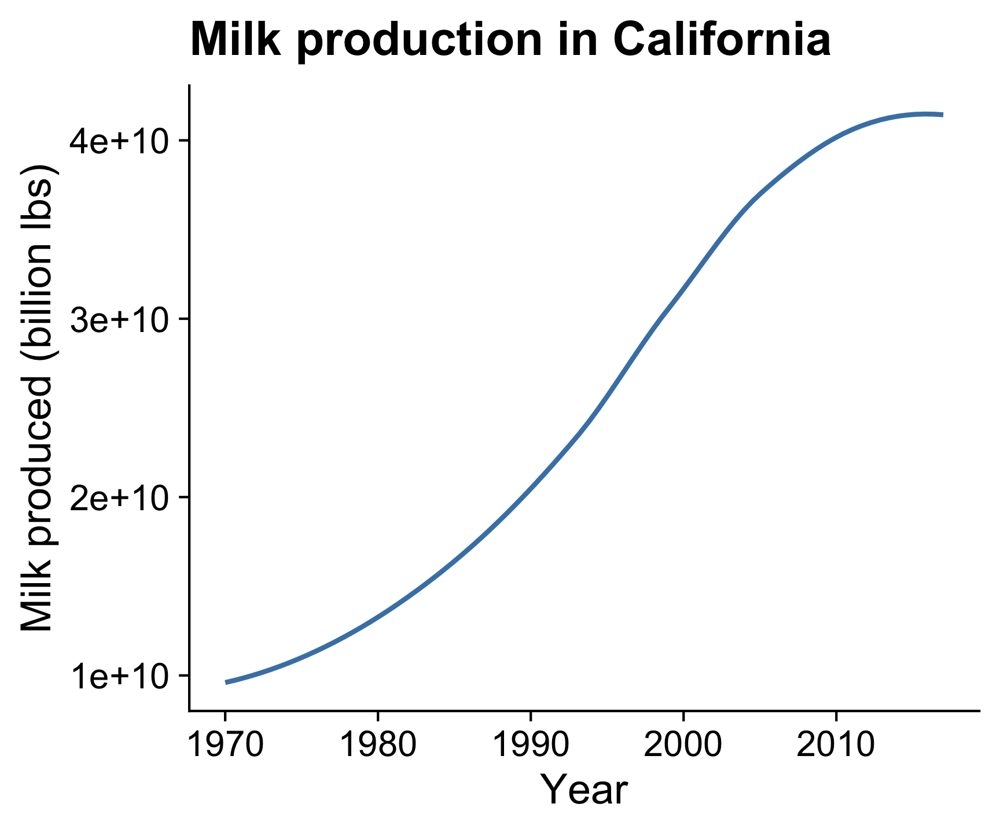
8.1.6 Smoothed line + points
Putting the smoothed line over the data points helps show whether outliers are driving the trend line.
How to: Smoothed line + points
Use alpha to make points slightly transparent
8.1.7 Bars
Bars are useful when emphasizing the data points
rather than the slope between them
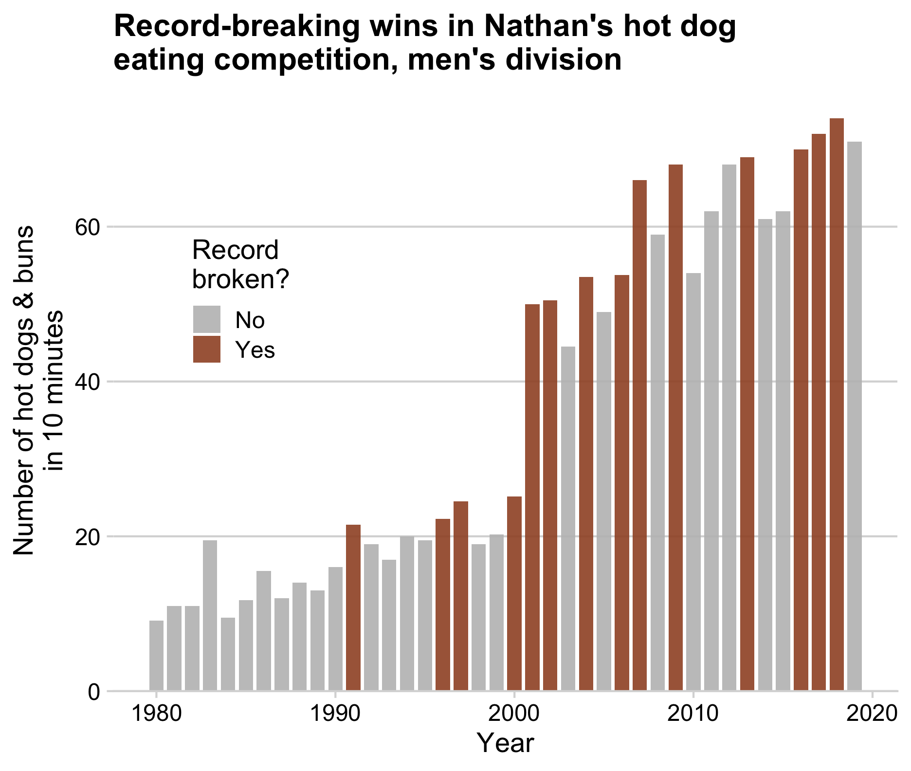
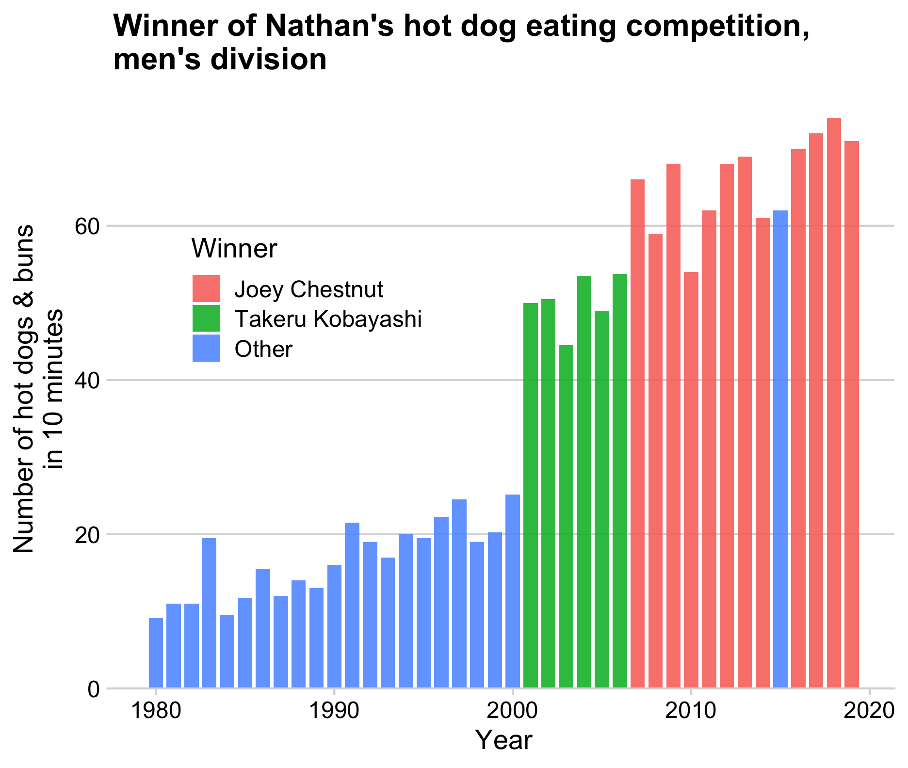
8.2 Multiple Variables
8.2.1 Points and Lines
With multiple categories, points & lines can get messy
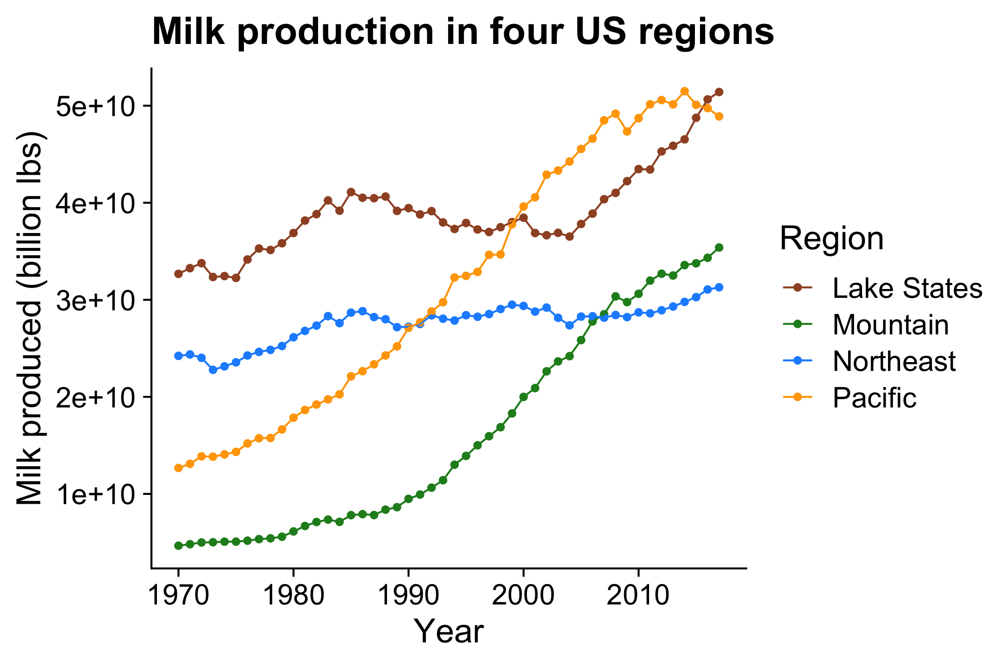
8.2.2 Lines
Better: Lines alone makes distinguishing trends easier
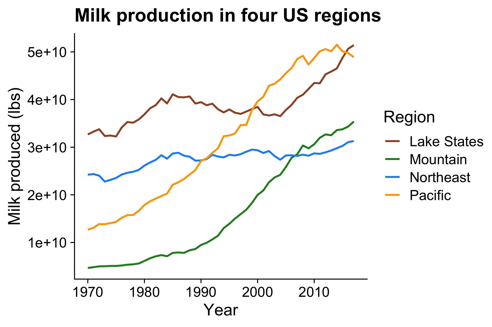
8.2.3 Labeled Lines
Even better: Directly label lines to remove legend

How to:
Directly label lines
Make the basic line chart first
# Format the data
milk_region <- milk_production %>%
filter(region %in% c(
'Pacific', 'Northeast', 'Lake States', 'Mountain')) %>%
group_by(year, region) %>%
summarise(milk_produced = sum(milk_produced)) %>%
ungroup()
# Make the line chart
ggplot(milk_region,
aes(x = year, y = milk_produced,
color = region)) +
geom_line(size = 1) +
scale_color_manual(values = c(
'sienna', 'forestgreen', 'dodgerblue', 'orange')) +
theme_half_open(font_size = 18) +
labs(
x = 'Year',
y = 'Milk produced (billion lbs)',
color = 'Region',
title = 'Milk production in four US regions')# Format the data
milk_region <- milk_production %>%
filter(region %in% c(
'Pacific', 'Northeast', 'Lake States', 'Mountain')) %>%
group_by(year, region) %>%
summarise(milk_produced = sum(milk_produced)) %>%
ungroup()
# Make the line plot
ggplot(milk_region,
aes(x = year, y = milk_produced,
color = region)) +
geom_line(size = 1) +
# Add labels
geom_text_repel(
data = milk_region %>%
filter(year == max(year)),
aes(label = region),
hjust = 0, nudge_x = 1, direction = "y",
size = 6, segment.color = NA) +
# Create space for labels on right side
scale_x_continuous(
breaks = seq(1970, 2010, 10),
expand = expansion(add = c(1, 13))) +
scale_color_manual(values = c(
'sienna', 'forestgreen', 'dodgerblue', 'orange')) +
theme_half_open(font_size = 18) +
# Remove legend
theme(legend.position = 'none') +
labs(x = 'Year',
y = 'Milk produced (billion lbs)',
title = 'Milk production in four US regions')Alternative: Embed the labels!
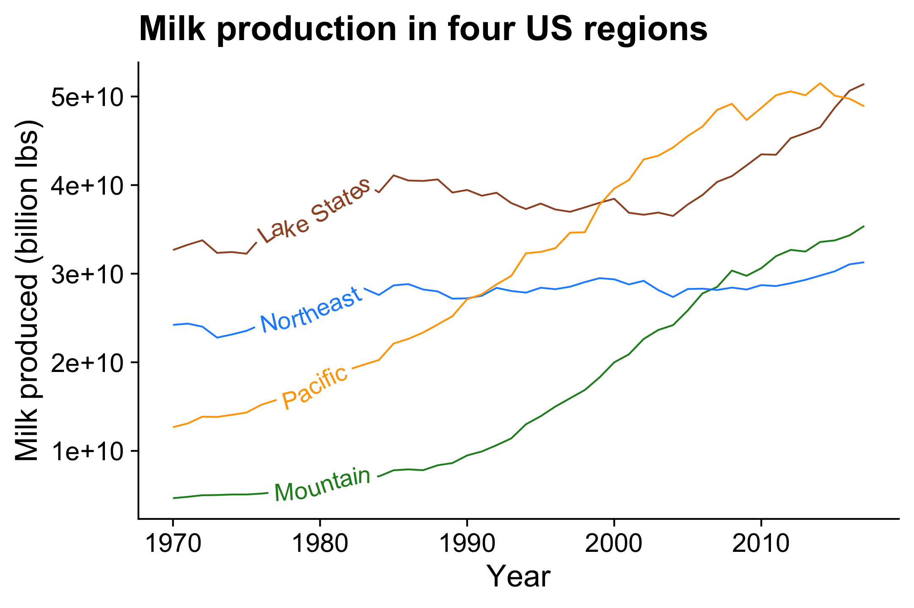
Use {geomtextpath} package
(see this SO issue for other strategies)
8.2.4 Stacked Line/Area Chart
If your goal is to communicate the overall / total trend,consider a stacked area chart.
Highlights regional trends:
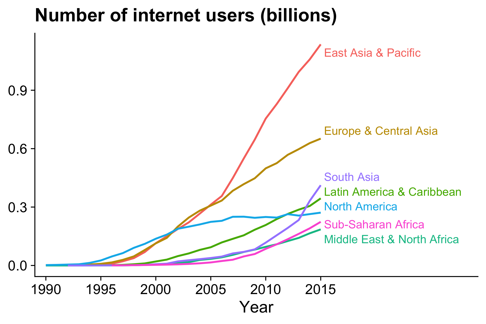
Highlights overall / total trend:

How to: Stacked area
8.2.5 Lots of Categories: Average Line Overlay
If you have lots of categories:
1) Plot all the data with the average highlighted
Measles in California:
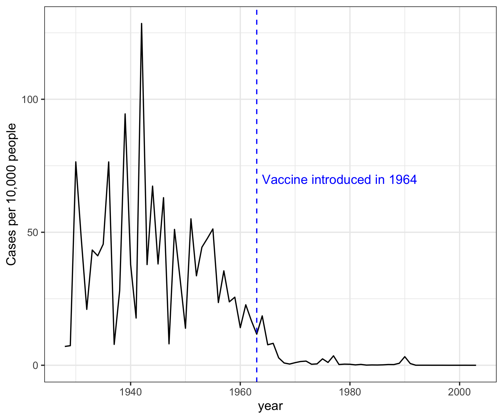
Measles in all 50 states:

How to: Average line overlay
Format the data
# Format the data
measles <- us_diseases %>%
filter(
disease == 'Measles',
!state %in% c("Hawaii", "Alaska")) %>%
mutate(
rate = (count / population) * 10000,
state = fct_reorder(state, rate)) %>%
# Compute annual mean rate across all states
group_by(year) %>%
mutate(
mean_rate = sum(count) / sum(population) * 10000)Make all the state lines in light grey color
ggplot(measles) +
geom_line(aes(x = year, y = rate, group = state),
color = 'grey', alpha = 0.3) +
# Add reference line & label:
geom_vline(xintercept = 1963, col = 'blue',
linetype = 'dashed') +
annotate('text', x = 1964, y = 150, hjust = 0,
label = 'Vaccine introduced in 1964',
color = 'blue') +
theme_minimal_grid(font_size = 18) +
labs(y = 'Cases per 10,000 people')Now overlay the annual mean line
ggplot(measles) +
geom_line(
aes(x = year, y = rate, group = state),
color = 'grey', alpha = 0.3) +
geom_line(
aes(x = year, y = mean_rate), size = 0.8) +
# Add US mean label
annotate(
'text', x = 1945, y = 55, hjust = 0,
label = 'US Mean') +
# Add reference line & label
geom_vline(xintercept = 1963, col = 'blue',
linetype = 'dashed') +
annotate('text', x = 1964, y = 150, hjust = 0,
label = 'Vaccine introduced in 1964',
color = 'blue') +
theme_minimal_grid(font_size = 18) +
labs(y = 'Cases per 10,000 people')8.2.6 Lots of Categories: Heat Maps
2) Plot all the data with a heat map
Heatmaps are great for multiple divisions of time
My activity on Github:

Check out this heat map on Traffic fatalities
8.3 How to: Heat map
Create main grid with geom_tile()
ggplot(measles) +
geom_tile(
aes(x = year, y = state, fill = rate),
color = 'grey80') +
# Add reference line & label
geom_vline(
xintercept = 1963, col = 'blue') +
annotate(
'text', x = 1964, y = 50.5, hjust = 0,
label = 'Vaccine introduced in 1964',
color = 'blue')Adjust scales and adjust theme
ggplot(measles) +
geom_tile(aes(x = year, y = state, fill = rate),
color = 'grey80') +
# Add reference line & label
geom_vline(xintercept = 1963, col = 'blue') +
annotate(
'text', x = 1964, y = 50.5, hjust = 0,
label = 'Vaccine introduced in 1964',
color = 'blue') +
# Adjust scales
scale_x_continuous(expand = c(0, 0)) +
scale_fill_viridis(
option = 'inferno', direction = -1) +
# Adjust theme
theme_minimal() +
theme(
panel.grid = element_blank(),
legend.position = 'bottom',
text = element_text(size = 10)) +
coord_cartesian(clip = 'off') +
labs(
x = NULL, y = NULL,
fill = 'Cases per 10,000 people',
title = 'Measles')Color scale is linear in this chart:
Adjust scales and adjust theme
ggplot(measles) +
geom_tile(aes(x = year, y = state, fill = rate),
color = 'grey80') +
# Add reference line & label
geom_vline(xintercept = 1963, col = 'blue') +
annotate(
'text', x = 1964, y = 50.5, hjust = 0,
label = 'Vaccine introduced in 1964',
color = 'blue') +
# Adjust scales
scale_x_continuous(expand = c(0, 0)) +
scale_fill_viridis(
option = 'inferno', direction = -1,
trans = 'sqrt') +
# Modify legend color bar
guides(fill = guide_colorbar(
title.position = 'top', reverse = TRUE)) +
# Adjust theme
theme_minimal() +
theme(
panel.grid = element_blank(),
legend.position = 'bottom',
text = element_text(size = 10)) +
coord_cartesian(clip = 'off') +
labs(
x = NULL, y = NULL,
fill = 'Cases per 10,000 people',
title = 'Measles')Non-linear color scale helps with large variations:
8.3.1 Two Additional Examples
Two other examples for showing change across multiple categories
Seasonal chart:
Source: http://r-statistics.co/Top50-Ggplot2-Visualizations-MasterList-R-Code.html#Seasonal%20Plot
Sankey chart:

Source: https://flowcharts.llnl.gov/
Would you consider purchasing an electric car?
Roberson, Laura A. & Helveston, J.P. (2020) “Electric vehicle adoption: can short experiences lead to big change?,” Environmental Research Letters. 15(0940c3).
Made using the ggforce package